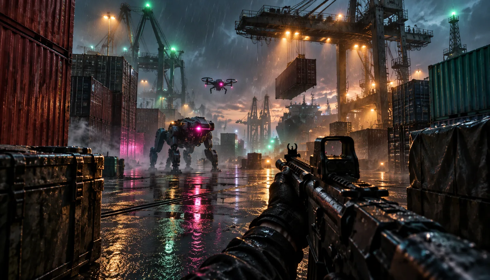

One prompt. A whole game.
No asset packs, no manual code. Every model, texture and sound was written as code by the model itself.
Hours, one shot
Built in a single ~8-hour run with no human feedback, from one broad prompt.
API cost
Roughly $550 at API pricing — about 2.7M output and 445M input tokens, heavily cached.
Single HTML file
The entire game, including Three.js, ships as one self-contained file. No external assets.
Controls & objectives
Click the stage above to capture your mouse. These are the game's actual bindings.
Move & fight
Arrow keys also turn and aim. Sound starts on your first click; the game pauses when the tab is hidden.

The mission
Generated, not assembled
How it was made
On 2026-11-09, Anthropic engineer Felix Rieseberg shared a run of Claude Fable 5.2 that produced a playable FPS from a single prompt. The model wrote the Three.js scene, the physics, the enemy AI, and even the shaders that stand in for textures — so the file stays tiny.
This page hosts a community mirror with the claude.ai frame-runtime removed so it runs as a plain web page. Nothing in the game code was changed. All credit goes to the original author.
Play anywhere, unblocked
Because the whole game is self-contained web code, it runs from any static host. If claude.ai is blocked on your network, a mirror like this one keeps it playable — no account, no install.
You can also run it locally: serve the folder and open it in a browser. It is a single HTML file, so it is trivial to host yourself.
What people are saying
Saltline spread quickly across tech press and developer communities after the demo went public.
Questions, answered
Ready to cut the relays?
Jump straight into the port. No account, no install — just click and play.
▶ Play Saltline now